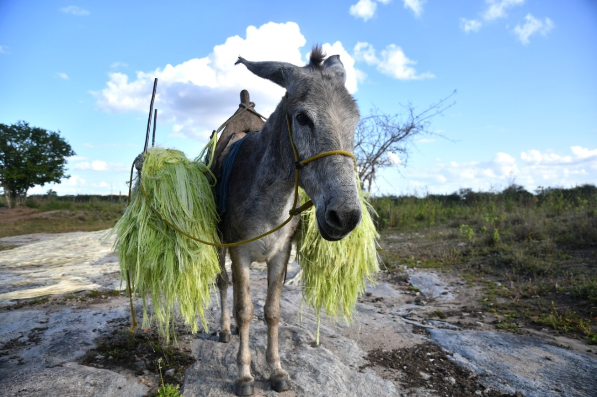
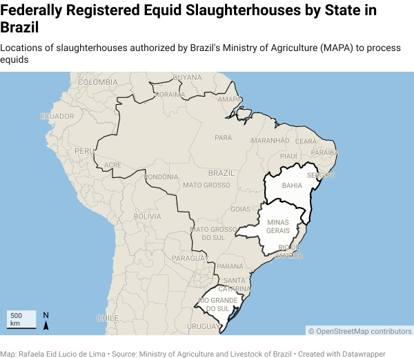

Official records from Brazil's Ministry of Agriculture and Livestock (MAPA) reveal that donkey slaughter is effectively a one-state operation, with two facilities in Bahia, in Amargosa and Itapetinga, responsible for nearly all activity nationwide

A donkey in the Brazilian Northeast. Photo: Alexandre Guzanshe.
Brazil has five federally registered slaughterhouses authorized to process equids, but donkey slaughter is effectively a one-state operation. Official records show activity overwhelmingly concentrated in Bahia, where two facilities, in Amargosa and Itapetinga, together accounted for more than 99% of all donkeys slaughtered in 2025. Amargosa alone was responsible for nearly 94% of that total, with Nordeste Pecuária processing 20,594 animals over the course of the year.
Data obtained from Brazil's Ministry of Agriculture and Livestock (MAPA) show that four slaughterhouses processed a combined total of 21,970 donkeys in 2025. The largest operation was Nordeste Pecuária, in Amargosa, which slaughtered 20,594 animals over the year, an average of 1,716 per month. Frigorífico Regional Sudoeste, in Itapetinga, processed a further 1,282 donkeys, averaging 107 per month. By contrast, facilities outside Bahia accounted for a marginal share of activity: Frigorífico Frigofava, in Minas Gerais, averaged just 5.5 donkeys per month, while Frigorifico Foresta, in Rio Grande do Sul, processed only 28 animals over the entire year.
The ministry does not distinguish between horses, donkeys, and mules in its slaughter statistics at the registration level, classifying all animals under the broader category of equids. However, MAPA's species-specific database obtained for this report records each animal by species, using the category asinino to refer specifically to donkeys. All 21,970 animals counted in this analysis are registered under that category.
The figures do not account for unregistered or clandestine slaughter.

Brazil has three federally registered equid slaughterhouses in Bahia, located in Itapetinga, Amargosa, and Simões Filho. The Simões Filho facility reported no equid slaughter during the period analyzed. The remaining two active facilities in other states — in Araguari, Minas Gerais, and São Gabriel, Rio Grande do Sul — together processed fewer than 100 donkeys throughout all of 2025.
The map plots the precise locations of slaughterhouses in Itapetinga and Simões Filho; the address for the Amargosa facility, however, is approximate. All addresses were provided by MAPA and cross-checked against Brazil's CNPJ (Cadastro Nacional da Pessoa Jurídica) registry, a Federal Revenue Service database that functions as the official identification record for registered businesses.
Donkey slaughter in Brazil is primarily linked to the export of skins to China, where they are processed to produce ejiao, a gelatin-based product derived from donkey collagen. The global trade in donkey skins has expanded in recent years, and in Brazil it gained traction in 2016.
Researchers from leading Brazilian institutions, including the University of São Paulo (USP), Federal University of Alagoas (UFAL), Federal University of Paraná (UFPR), and Federal University of Bahia (UFBA), as well as national and international animal protection organizations such as the National Forum for Animal Protection and Defense, The Donkey Sanctuary, and the National Front for the Defense of Donkeys, warn that the country's donkey population has declined sharply, largely driven by this extractive trade. They also note the absence of a structured production chain capable of sustaining or replenishing the population at current levels.
In 2025, researchers estimated a population of approximately 78,916 donkeys remaining in Brazil, based on cross-referenced data from IBGE (Brazilian Institute of Geography and Statistics), Agrostat (Brazilian Agribusiness Foreign Trade Statistics) and Food and Agriculture Organization (FAO), while acknowledging methodological limitations across sources. This estimate also included the Pêga breed, primarily concentrated in Minas Gerais, which has high genetic and economic value and is often associated with controlled breeding systems rather than the skin trade. Researchers caution that the actual population may be even lower today.
The figures show a highly concentrated donkey slaughter industry in Brazil, with Bahia functioning as its primary hub. Although only a small number of federally registered facilities are authorized to process equids, a single state accounts for the overwhelming majority of slaughter activity — and within that state, a single facility, Nordeste Pecuária in Amargosa, processed nearly 94% of all animals recorded nationwide in 2025.
At an international workshop held this year in Salvador, the IV International Workshop: Donkeys of Brazil, researchers from across the country gathered to raise the alarm over Brazil's rapidly declining donkey population. For those working in research and animal protection, the conclusions were stark. Concerns ranged from animal cruelty and welfare violations to serious sanitary risks and a near-total lack of traceability in the slaughter chain. Participants also flagged the accelerating loss of genetic resources, the biologically unsustainable pace of extraction given donkeys' reproductive constraints, and the broader conclusion that the current model is economically extractive and ultimately unviable.